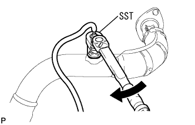

Exhaust Pipe Assembly (2AZ-FE) Installation |
| 1. Oxygen Sensor Installation |
 |
Using SST, install the oxygen sensor to the front exhaust pipe assembly.
| 2. Install Exhaust Pipe Assembly Front |
Compression Spring Inspection
 |
Using a vernier caliper, measure the free length of the compression spring.
 |
Gasket Installation
Insert a new gasket into the exhaust manifold by hand as far as it will go.
Using a wooden block and hammer, gradually tap in the gasket until it is flush with the exhaust manifold.
 |
Install the exhaust pipe assembly front with the 2 bolts and 2 compression springs.
 |
Connect the oxygen sensor connector.
| 3. Install Exhaust Pipe Assembly Center |
Install a new gasket to the exhaust pipe assembly front.
Install the exhaust center pipe assembly with the 3 exhaust pipe supports.
 |
Install the exhaust center pipe assembly to the exhaust pipe assembly front with the 2 bolts.
| 4. Install Front Floor Brace Center (Drive Type FF) |
 |
Install the front floor brace center with the 4 bolts.
| 5. Install Exhaust Tail Pipe Assembly |
Compression Spring Inspection
|
Using a vernier caliper, measure the free length of the compression spring.
 |
Gasket Installation
Insert a new gasket into the exhaust center pipe assembly as far as it will go by hand.
Install the exhaust tail pipe assembly with the 2 exhaust pipe supports.
 |
Install the exhaust tail pipe assembly to the exhaust center pipe assembly with the 2 bolts and 2 compression springs.
| 6. Inspect for Exhaust Gas Leaks |
Check that there are no exhaust gas leaks from the locations shown in the illustration (exhaust pipe joints and each sensor installation area).